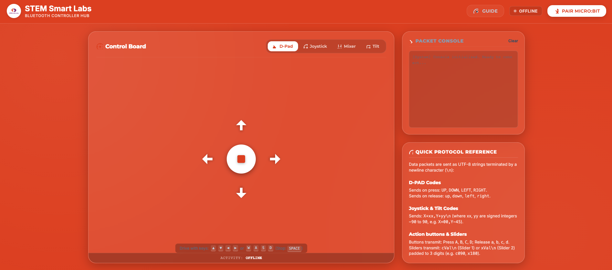
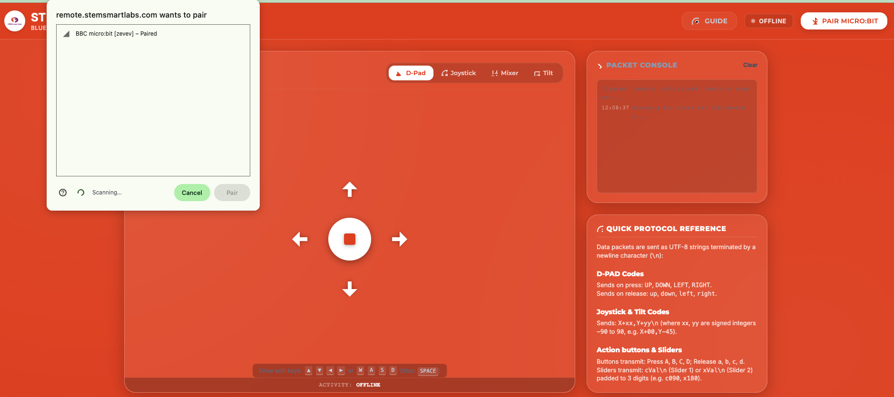
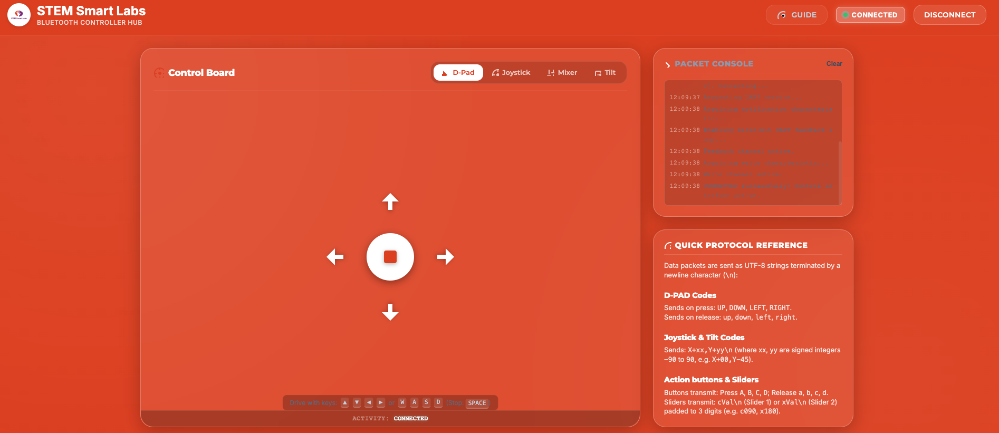
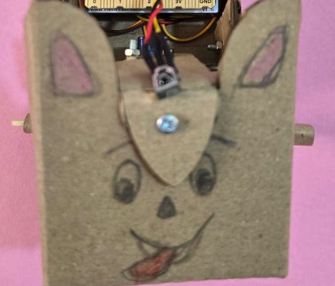

Play and Experiment with Robot Dog¶
Now it is time to have fun with your Robot Dog, test its movements, and explore new experiments with your own robot pet dog.
You can control the Robot Dog in two ways:
- Using the Bluetooth Web Control App
- Using the IR Remote Control
1. Control Robot Dog Using Bluetooth Web Control App¶
The Robot Dog can be controlled wirelessly using the STEM Smart Labs Bluetooth Controller Hub.
Open the web control app:
https://remote.stemsmartlabs.com/

Supported Platforms¶
The Bluetooth web control app works on the following platforms:
| Platform | Browser / App Requirement |
|---|---|
| Windows | Chrome browser with Bluetooth support |
| Mac | Chrome browser with Bluetooth support |
| Chromebook | Chrome browser with Bluetooth support |
| iOS | Bluefy Web BLE Browser |
| iPadOS | Bluefy Web BLE Browser |
The browser or device should support Bluetooth 4.0 or higher.
iPhone and iPad Support¶
For iPhone or iPad, use the Bluefy Web BLE Browser app.
Download Bluefy from the App Store:
iOS requirement:
- iOS 13 or higher
2. Pair the Micro:bit¶

Follow these steps to connect your Robot Dog:
- Power ON the Robot Dog using the switch on the expansion board.
- Open the Bluetooth Web Control App:
https://remote.stemsmartlabs.com/
- Click PAIR MICROBIT.
- Select your micro:bit from the Bluetooth device list.
- Click Pair.
- Wait until the app connects to the micro:bit.
- Once connected, the app is ready to control the Robot Dog.
Tip
Keep the Robot Dog close to the computer, Chromebook, iPhone, or iPad while pairing.

3. Use D-Pad Controls¶
After the micro:bit is connected, use the D-Pad controls on the web app to move the Robot Dog.
| D-Pad Button | Robot Dog Action |
|---|---|
| Up | Move forward |
| Down | Move backward |
| Left | Turn left |
| Right | Turn right |
| Center / Stop | Stop movement |
The Robot Dog will respond to the direction selected from the web control app.
Keyboard Control¶
You can also use keyboard keys if supported by the web app.
| Key | Action |
|---|---|
| W / Up Arrow | Move forward |
| S / Down Arrow | Move backward |
| A / Left Arrow | Turn left |
| D / Right Arrow | Turn right |
| Space | Stop |
4. Control Robot Dog Using IR Remote¶
You can also control the Robot Dog using the IR remote control.
Point the IR remote directly towards the IR sensor mounted near the top of the Robot Dog head.

Make sure:
- The IR sensor is visible.
- The IR sensor is not covered by wires or Velcro.
- The remote is pointed towards the IR receiver.
- The Robot Dog is powered ON.
IR Remote Controls¶
| IR Remote Button | Robot Dog Action |
|---|---|
| Forward | Move forward |
| Backward | Move backward |
| Left | Turn left |
| Right | Turn right |
| Stop / OK | Stop movement |
Note
If the Robot Dog does not respond to the IR remote, check whether the IR sensor is connected to P2 and aligned properly near the top of the Robot Dog head.
5. Experiment with Robot Dog¶
After testing the basic movements, try experimenting with your Robot Dog.
Here are some fun activities:
| Experiment | What to Try |
|---|---|
| Walking test | Check how smoothly the Robot Dog moves forward |
| Turning test | Test left and right turning movement |
| Obstacle path | Create a small path and guide the Robot Dog through it |
| Remote challenge | Control the Robot Dog only using the IR remote |
| Bluetooth challenge | Control the Robot Dog from the web app |
| Speed tuning | Modify the program to change the walking speed |
| Step tuning | Adjust servo angles in the code and observe the movement |
| Creative design | Add more colours, stickers, or a name tag to the Robot Dog |
6. Safety and Usage Tips¶
- Use the Robot Dog on a flat surface.
- Do not pull the servo wires while it is moving.
- Keep fingers away from the moving legs.
- Make sure the micro:bit and expansion board are secured using the Velcro band.
- Keep the IR sensor facing forward or upward.
- Turn OFF the power switch after use.
- If the legs get stuck, turn OFF the power before adjusting them.
7. Troubleshooting¶
| Issue | Possible Reason | Solution |
|---|---|---|
| Web app does not find micro:bit | Bluetooth is off or micro:bit is not powered | Turn ON Bluetooth and power ON the Robot Dog |
| Micro:bit pairs but does not respond | Program may not be loaded correctly | Recheck and upload the Robot Dog program |
| Robot Dog moves in wrong direction | Servo connections may be swapped | Check front servo on P0 and back servo on P1 |
| IR remote does not work | IR sensor is blocked or misaligned | Point the IR sensor towards the remote |
| Only one servo moves | Servo wire is loose | Check P0 and P1 servo connections |
| Robot Dog stops suddenly | Power may be low | Replace or recharge the battery |
Completed¶
Congratulations! You have successfully built and tested your own Robot Dog.
Enjoy playing and experimenting with your own robot pet dog.